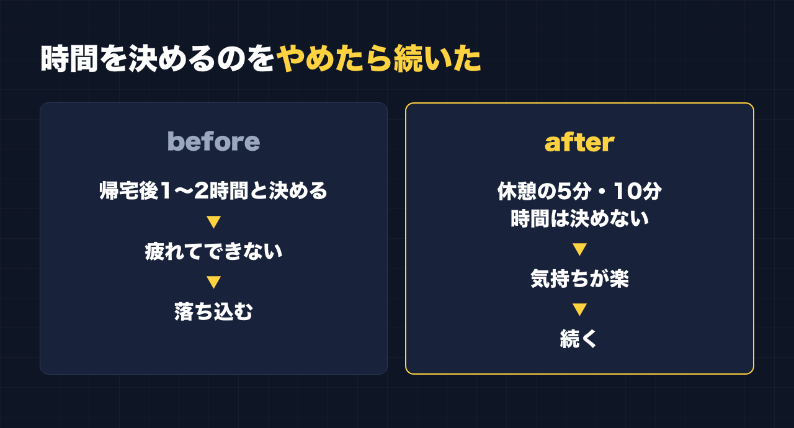

1. タイトルをコピーして、note のタイトル欄に貼る
2. 「本文1をコピー」から順にコピーし、note の本文に貼る
3. 青いラベルの位置に、images フォルダの同じ名前の画像を入れる（本文には貼られません）
※ 見出しが普通の文字になった場合は、その行を選んで「大見出し」を設定してください
「帰ったら、毎日1〜2時間は副業をやる」
そう決めていました。
でも、帰宅すると疲れていて、できない。決めた時間が、何もしないまま過ぎていく。
できない日が続くと、今度はできない自分に落ち込みました。周りの人はちゃんとやっているのに、できていないのは自分だけだ。そう感じていました。
この記事は、そこから「スキマ5分」に切り替えて、副業が続くようになった話です。
時間術の記事ではありません。以前、「時間がない」会社員が副業発信を続けるための方法を記事にしたことがあります。今回はやり方の話より、私自身の、ちょっと情けない話のほうを書きます。
「1〜2時間」は、立派な計画だった
私は会社員で、4人の子どもの父親です。PTA 会長もやっています。
副業の講座では、どこでも同じことを言われました。続ける、売れている人を真似る、手を動かす。
だから「毎日決まった時間、手を動かそう」と考えたのは、自然な流れでした。帰宅後の1〜2時間。紙に書けば、きちんとした計画です。
問題は、その計画が、帰宅後の自分の体力を計算に入れていなかったことでした。
できない自分に、落ち込んだ
計画どおりにできない日は、その日の副業はゼロです。
そして、できない日が重なると、「自分だけができていない」と感じて落ち込みました。副業が進まないことに加えて、決めたことができない自分に落ち込む。それが続いていました。
やり方を変えた：時間を決めない
そこで、やり方を変えました。
- 帰宅後に何時間、と決めるのをやめた
- 昼休みや、仕事の休憩の合間の5分・10分でやる
- 時間は決めない。やれるときに、やれる分だけやる
変わったのは、気持ちでした。
「1〜2時間やる」と決めていたころは、できない日は失敗の日でした。今は、5分できれば、それでその日はやったことになります。できなかった日があっても、次の休憩でまたやればいい。
気持ちが楽になって、そのぶん、続くようになりました。成果はまだこれからです。でも、続いている。私にとっては、それがいちばん大きな変化でした。

5分でできることを、先に用意しておく
ここからは、スキマ時間で作業するときの一般的なコツです。正解というより「こうすると5分が使いやすい」という考え方として読んでください。
作業を5分のサイズに切っておく
「記事を書く」は5分では終わりません。でも、こういう単位なら5分で終わります。
- 見出しを3つ考える
- 投稿のネタを1行だけメモする
- 下書きを1段落だけ直す
- 伸びている投稿を1本読んで、構成をメモする
休憩に入ってから「何をしよう」と考えると、それだけで5分が終わります。やることのリストを、5分サイズで先に作っておくのがおすすめです。
続きから始められるようにしておく
中途半端なところで終わっても、次にすぐ再開できるようにしておきます。スマホのメモの一番上に「次にやること」を1行書いてから閉じる。これだけで、次の5分の立ち上がりが違います。
下書きとリサーチは AI に手伝ってもらう
私は、リサーチと下書きに AI を使っています。5分で白紙から文章を書くのは大変ですが、AI が出した下書きを直すだけなら、5分でも進みます。
ただ、AI の文章をそのまま出すことはしません。AI が書いたきれいな文章より、自分がボソッとつぶやいた一言のほうが、反応があるからです。人間味の部分は、自分で足しています。
「作る日」と「直す日」を分けない
まとまった時間がないと、「今日は書く日」「今日は直す日」と分けたくなります。でも5分単位なら、書くのも直すのも同じ1コマです。その5分でできそうなほうを選べば十分です。
途中で終わっていい、と先に決めておく
5分で区切りよく終わることは、あまりありません。途中で休憩が終わるのは当たり前。最初から「途中で閉じていい」と決めておくと、5分を使うことへの抵抗が小さくなります。
できなかった日を数えない
これがいちばん大事だと思っています。できた日だけを見る。できなかった日は、ただの休みです。
最近は、休憩中にスマホから家の Mac に頼んでいる
最近、もう一つ変えたことがあります。
休憩中にスマホから指示を送ると、家の Mac が作業を進めてくれるようにしました。スマホで「これを調べておいて」のように書いておけば、作業は Mac 側で進みます。
仕組みの細かい話は、ここでは省きます。まだ始めたばかりで、使いこなしているとは言えません。ただ、「5分で自分ができること」に加えて、「5分で頼んでおけること」ができました。
もう一つ、Threads の投稿は、自分で作ったアプリで自動で投稿されるようにしています。投稿する時間に合わせて自分がスマホを開く必要はありません。
同じように落ち込んでいる人へ
もし今、「毎日○時間やる」と決めて、できなくて落ち込んでいるなら、それはたぶんあなただけではありません。少なくとも、私もそうでした。
時間を決めるのをやめても、副業は続けられます。私の場合は、やめたほうが続きました。
今日の休憩で、5分だけ。ネタを1行メモするところから始めてみてください。
ここからは宣伝です。
関連する有料記事（準備中）：「休憩5分で、家の Mac に副業の作業を任せる」
この記事では省いた、スマホから家の Mac に作業を頼む仕組みと、安全に使うための設定を書く予定です。
公式LINEでは、発信や副業に使えるプロンプトを配っています。「特典」と送ると、LINE限定のプロンプト5本が届きます。
https://lin.ee/RzyA13P
自分の強みを整理して、SNSの投稿の下書きまで作れるツール「副業ドラフト」も作っています。Threads の下書き3本までは無料で試せます。5分の休憩でも試せる長さです。
https://note-threadssf.onrender.com
最後まで読んでいただき、ありがとうございました。